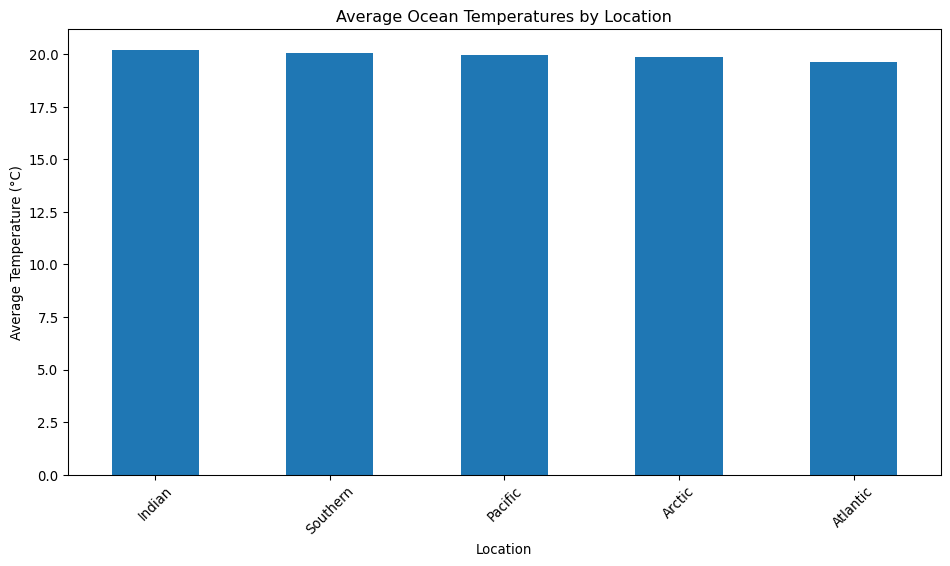

End interactive session 4C
Code
import pandas as pd
import numpy as np
import matplotlib.pyplot as pltDataFrames: A Comprehensive 9-Step Data Science Workflow
In this interactive session, we’ll explore pandas DataFrames within the context of a practical data science workflow. We’ll use a dataset on ocean temperatures and walk through the following steps:
For each step, we’ll focus on the most common and essential commands used in data science, providing detailed explanations and hints at more advanced topics we’ll cover in future sessions or in later courses.
Let’s begin by setting up our environment and creating our dataset.
First, let’s import the necessary libraries:
Now, let’s create a sample dataset about ocean temperatures:
#| echo: true
#| echo: true
# Create sample data
# Create a random number generator object
# Create a random number generator object
rng = np.random.default_rng(42) # 42 is the seed for reproducibility
# Generate date range (3 years of data)
dates = pd.date_range(start='2020-01-01', end='2022-12-31', freq='D')
print(f"Number of days: {len(dates)}")
# Define locations (5 oceans)
locations = ['Pacific', 'Atlantic', 'Indian', 'Southern', 'Arctic']
print(f"Number of locations: {len(locations)}")
# Calculate total number of rows (one observation for each day, for each location)
total_rows = len(dates) * len(locations)
print(f"Total number of rows: {total_rows}")
# Generate 'date' column
# np.tile repeats the entire dates array for each location
date_column = np.tile(dates, len(locations))
print("Date column shape:", date_column.shape)
# Generate 'location' column
# np.repeat repeats each location for all dates before moving to the next location
location_column = np.repeat(locations, len(dates))
print("Location column shape:", location_column.shape)
# Generate 'temperature' column
# Using normal distribution: mean=20, std_dev=5
temperature_column = rng.normal(20, 5, total_rows)
print("Temperature column shape:", temperature_column.shape)
# Generate 'salinity' column
# Using normal distribution: mean=35, std_dev=1
salinity_column = rng.normal(35, 1, total_rows)
print("Salinity column shape:", salinity_column.shape)
# Generate 'depth' column
# Using choice to randomly select from given depths
depth_options = [0, 50, 100, 200, 500, 1000]
depth_column = rng.choice(depth_options, total_rows)
print("Depth column shape:", depth_column.shape)
# Create DataFrame
df = pd.DataFrame({
'date': date_column,
'location': location_column,
'temperature': temperature_column,
'salinity': salinity_column,
'depth': depth_column
})
# Introduce missing values (NaN) to temperature and salinity columns
# We'll use 5% as the probability of a value being NaN
# For temperature
temp_mask = rng.choice([True, False], total_rows, p=[0.05, 0.95])
df.loc[temp_mask, 'temperature'] = np.nan
# For salinity
sal_mask = rng.choice([True, False], total_rows, p=[0.05, 0.95])
df.loc[sal_mask, 'salinity'] = np.nan
# Display info about the resulting DataFrame
print("\nDataFrame Info:")
df.info()
# Save as CSV
df.to_csv('ocean_temperatures.csv', index=False)
print("\nDataset created and saved as 'ocean_temperatures.csv'")Number of days: 1096
Number of locations: 5
Total number of rows: 5480
Date column shape: (5480,)
Location column shape: (5480,)
Temperature column shape: (5480,)
Salinity column shape: (5480,)
Depth column shape: (5480,)
DataFrame Info:
<class 'pandas.core.frame.DataFrame'>
RangeIndex: 5480 entries, 0 to 5479
Data columns (total 5 columns):
# Column Non-Null Count Dtype
--- ------ -------------- -----
0 date 5480 non-null datetime64[ns]
1 location 5480 non-null object
2 temperature 5197 non-null float64
3 salinity 5202 non-null float64
4 depth 5480 non-null int64
dtypes: datetime64[ns](1), float64(2), int64(1), object(1)
memory usage: 214.2+ KB
Dataset created and saved as 'ocean_temperatures.csv'The read_csv() function is one of the most commonly used methods for importing data in pandas. It reads a comma-separated values (CSV) file into a DataFrame.
Data imported successfully.Explanation: - pd.read_csv() is versatile and can handle various file formats and options. - It automatically infers data types for each column. - The resulting object is a DataFrame, pandas’ primary data structure.
Future topics: - Reading other file formats (Excel, JSON, SQL databases) - Handling large datasets with chunksize parameter - Custom parsers for non-standard file formats
Exploration is crucial for understanding your dataset. We’ll use several key functions for this purpose.
First few rows:
date location temperature salinity depth
0 2020-01-01 Pacific 21.523585 NaN 200
1 2020-01-02 Pacific 14.800079 34.467264 100
2 2020-01-03 Pacific 23.752256 35.016505 100
3 2020-01-04 Pacific 24.702824 36.416944 200
4 2020-01-05 Pacific 10.244824 35.807487 1000
DataFrame info:
<class 'pandas.core.frame.DataFrame'>
RangeIndex: 5480 entries, 0 to 5479
Data columns (total 5 columns):
# Column Non-Null Count Dtype
--- ------ -------------- -----
0 date 5480 non-null object
1 location 5480 non-null object
2 temperature 5197 non-null float64
3 salinity 5202 non-null float64
4 depth 5480 non-null int64
dtypes: float64(2), int64(1), object(2)
memory usage: 214.2+ KB
Summary statistics:
temperature salinity depth
count 5197.000000 5202.000000 5480.000000
mean 19.909088 34.993770 306.925182
std 4.979046 1.009512 349.828443
min 1.757936 30.610885 0.000000
25% 16.532469 34.340138 50.000000
50% 19.961369 34.974046 100.000000
75% 23.156441 35.668759 500.000000
max 37.270232 39.025824 1000.000000
Missing values:
date 0
location 0
temperature 283
salinity 278
depth 0
dtype: int64Explanation: - head(): Shows the first few rows (default is 5) of the DataFrame. - info(): Provides a concise summary of the DataFrame, including column names, non-null counts, and data types. - describe(): Generates descriptive statistics for numerical columns. - isna().sum(): Counts missing values in each column.
Future topics: - Custom descriptive statistics - Visualization techniques for data exploration (histograms, box plots) - Correlation analysis between variables
Data cleaning is often one of the most time-consuming parts of data analysis. Here, we’ll focus on handling missing values.
Rows with missing values removed: 541
Remaining rows: 4939Explanation: - dropna(): Removes rows containing any null values. - This method can be customized to drop based on specific columns or thresholds.
Future topics: - Imputation techniques for missing data - Handling outliers and anomalies - Data type conversions and consistency checks
Filtering allows us to focus on specific subsets of our data based on conditions.
# Filter for Pacific Ocean data in summer months (June, July, August) of 2021
pacific_summer = df_cleaned[(df_cleaned['location'] == 'Pacific') &
(df_cleaned['date'].between('2021-06-01', '2021-08-31'))]
print("Pacific Ocean data for Summer 2021:")
print(pacific_summer.head())
print(f"\nNumber of records: {len(pacific_summer)}")Pacific Ocean data for Summer 2021:
date location temperature salinity depth
517 2021-06-01 Pacific 16.558139 36.613441 500
519 2021-06-03 Pacific 28.144685 33.617238 1000
520 2021-06-04 Pacific 15.149252 35.225117 200
521 2021-06-05 Pacific 15.561522 34.946657 200
522 2021-06-06 Pacific 26.678922 35.864044 100
Number of records: 83Explanation: - Boolean indexing is used to filter data based on conditions. - & operator combines multiple conditions (logical AND). - between() is a convenient method for range comparisons.
Future topics: - Complex filtering with multiple conditions - Using query() method for string expressions - Filtering with regular expressions
Sorting helps in understanding the distribution and extremes of our data.
Top 10 warmest temperature readings:
date location temperature
4141 2022-05-03 Southern 37.270232
4222 2022-07-23 Southern 36.355131
846 2022-04-26 Pacific 35.894268
3304 2020-01-17 Southern 35.442561
2863 2021-11-02 Indian 35.297656
3141 2022-08-07 Indian 35.158812
4319 2022-10-28 Southern 35.118907
5183 2022-03-10 Arctic 34.981195
1616 2021-06-04 Atlantic 34.571223
139 2020-05-19 Pacific 34.569312Explanation: - sort_values(): Sorts the DataFrame by one or more columns. - ascending parameter controls the sort order for each column.
Future topics: - Sorting by a computed metric - Hierarchical sorting with multi-index DataFrames - Implementing custom sorting algorithms
Data transformation involves creating new features or modifying existing ones. We’ll look at different types of transformations.
# Single column transformation
df_cleaned['temperature_f'] = (df_cleaned['temperature'] * 9/5) + 32
# Multi-column transformation
df_cleaned['temp_sal_ratio'] = df_cleaned['temperature'] / df_cleaned['salinity']
# Using apply() for more complex transformations
def depth_category(depth):
if depth <= 50:
return 'Shallow'
elif depth <= 200:
return 'Medium'
else:
return 'Deep'
df_cleaned['depth_category'] = df_cleaned['depth'].apply(depth_category)
print("DataFrame with new columns:")
print(df_cleaned[['temperature', 'temperature_f', 'temp_sal_ratio', 'depth', 'depth_category']].head())DataFrame with new columns:
temperature temperature_f temp_sal_ratio depth depth_category
1 14.800079 58.640143 0.429395 100 Medium
2 23.752256 74.754061 0.678316 100 Medium
3 24.702824 76.465082 0.678333 200 Medium
4 10.244824 50.440683 0.286108 1000 Deep
5 13.489102 56.280384 0.376834 0 ShallowExplanation: - Direct column operations for simple transformations. - Creating new columns based on calculations from existing columns. - apply() function for applying custom functions to columns.
Future topics: - Vectorized operations for performance - Window functions for rolling calculations - Advanced apply() usage with axis parameter
Grouping allows us to split the data into subsets based on some criteria.
Group sizes:
location depth_category
Arctic Deep 316
Medium 338
Shallow 334
Atlantic Deep 327
Medium 349
Shallow 316
Indian Deep 318
Medium 336
Shallow 340
Pacific Deep 344
Medium 313
Shallow 333
Southern Deep 318
Medium 319
Shallow 338
dtype: int64Explanation: - groupby(): Creates a GroupBy object, which doesn’t compute anything until an aggregation method is called. - Multiple columns can be used for grouping, creating hierarchical groups.
Future topics: - Time-based grouping - Custom grouping functions - Working with GroupBy objects (iteration, filtration)
Aggregation computes summary statistics for each group.
Aggregated data:
temperature salinity
mean std mean std
location depth_category
Arctic Deep 19.899673 4.919967 35.024201 1.044496
Medium 20.278376 5.027461 34.996241 0.953111
Shallow 19.473178 5.022971 34.950225 1.017149
Atlantic Deep 19.080289 4.784324 34.989573 0.945400
Medium 19.707030 5.222012 34.977164 1.033639
Shallow 20.109729 4.984291 34.977224 0.973582
Indian Deep 19.764921 4.999262 34.974590 0.939823
Medium 20.522776 4.980354 35.031657 1.025202
Shallow 20.233734 5.051566 35.038030 0.969988
Pacific Deep 19.761942 4.611211 35.082996 1.035482
Medium 20.203291 4.773300 35.021385 1.059246
Shallow 19.968260 5.225368 35.068652 1.016507
Southern Deep 20.761787 4.922963 34.903479 1.084392
Medium 19.348108 4.878151 34.984482 0.980553
Shallow 20.004547 4.853461 34.934175 1.063821Explanation: - agg(): Applies multiple aggregation functions at once. - Results in a multi-index DataFrame where the first level of columns represents the original columns and the second level represents the applied functions.
Future topics: - Custom aggregation functions - Combining aggregation with transformation - Reshaping aggregated data
Visualization is key for understanding patterns and communicating results.
# Plot average temperatures by location, sorted from highest to lowest. Use parentheses to allow for multi-line commands.
avg_temps = (df_cleaned
.groupby('location')['temperature']
.mean()
.sort_values(ascending=False)
)
plt.figure(figsize=(10, 6))
avg_temps.plot(kind='bar')
plt.title('Average Ocean Temperatures by Location')
plt.xlabel('Location')
plt.ylabel('Average Temperature (°C)')
plt.xticks(rotation=45)
plt.tight_layout()
plt.show()
Explanation: - pandas’ plotting interfac interacts nicely with matplotlib and they can be used simultaneously. - plot() method with kind='bar' creates a bar plot. - Various customization options for labels, titles, and layout.
Future topics: - Advanced visualizations (heatmaps, pair plots, geographic plots) - Interactive visualizations with libraries like Plotly - Customizing plot styles and color schemes
This comprehensive walkthrough of a 9-step data science workflow with pandas DataFrames has introduced you to the most common and essential commands used in each step of the process. We’ve covered importing data, exploration, cleaning, filtering, sorting, transformation, grouping, aggregation, and visualization.
Remember, this is just the beginning. Each of these steps has much more depth that we’ll explore in future sessions. The pandas library is incredibly powerful and flexible, offering numerous ways to manipulate and analyze data efficiently.
As you continue your journey in data science, you’ll find yourself repeatedly using these core concepts, building upon them to tackle more complex problems and datasets.
End interactive session 4C